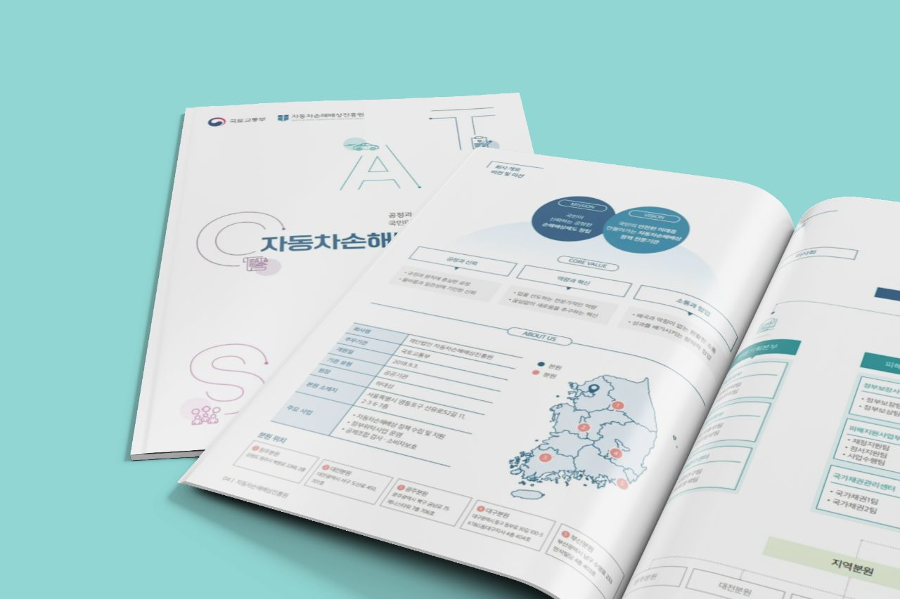

증상
“무릎 안쪽이 아파요”
증상 페이지가 따로 있어야 이 검색이 도착할 주소가 생깁니다.
AI 가시성 홈페이지 리뉴얼
홈페이지 제작 · Hospital
환자는 검색으로 병원을 고릅니다. 진료과·의료진·진료 정보를 확인하고 예약까지 이어지는 홈페이지를 만듭니다.
광고를 늘리기 전에 홈페이지부터 봐야 하는 경우가 많습니다. 들어온 환자가 확인하려던 것을 못 찾고 나가면, 광고로 유입되어도 필요한 정보를 찾지 못하면 문의로 이어지기 어렵습니다.
검색해도 우리 병원이 나오지 않습니다
환자는 병원 이름이 아니라 지역·진료과·증상으로 검색합니다.
들어와도 진료과를 찾지 못합니다
진료 안내가 한 페이지에 몰려 있으면 확인 도중 나갑니다.
모바일에서 예약이 불편합니다
대부분의 환자가 휴대폰으로 들어와 그 자리에서 결정합니다.
수정할 때마다 제작사에 연락해야 합니다
휴진 안내 한 줄 바꾸는 데 며칠이 걸립니다.
개원 일정이 촉박합니다
홈페이지가 개원일에 맞춰 열리지 못할 것 같습니다.
들어온 상담이 어디로 갔는지 모릅니다
홈페이지에서 발생한 문의가 응대로 이어지지 않습니다.
환자가 검색하는 증상·지역·진료과에 맞는 페이지를 구성해 검색 유입과 연결합니다.
증상
증상 페이지가 따로 있어야 이 검색이 도착할 주소가 생깁니다.
질환·시술
진료과 한 페이지에 다 넣으면 질환으로 찾는 환자를 놓칩니다.
지역
가까운 병원을 찾는 검색이 가장 많습니다.
진료 정보
진료 시간·주차·비용도 검색어입니다.
진료과를 어떻게 나눌지, 의료광고에서 무엇이 걸리는지 알고 시작합니다. 환자가 검색할 때와 AI에게 물을 때 양쪽에서 병원이 보이도록 구조를 잡습니다.
01 · SEO
환자가 쓰는 말마다 도착할 페이지를 만들고, 검색엔진이 읽는 것들을 함께 정리합니다. 그만큼 검색 노출 가능성이 높아집니다.
검색 결과 SEO
○○동 정형외과
1
○○정형외과 — 무릎·어깨 통증 진료
ooclinic.co.kr › 진료안내 › 무릎
△△의원
example-clinic.co.kr
□□병원
example-hospital.kr
02 · AEO · GEO
환자가 ChatGPT·제미나이·퍼플렉시티에 물을 때, 그 답에 병원이 언급되려면 답이 될 문장이 페이지에 있어야 합니다.
AI 답변 AEO · GEO
무릎 안쪽이 아픈데 어디로 가야 해?
무릎 안쪽 통증은 정형외과에서 봅니다. ○○동이라면 ○○정형외과처럼 무릎 진료를 따로 안내하는 곳을 확인해 보세요. 진료 시간과 주차 정보도 함께 나와 있습니다.
참고 — ooclinic.co.kr › 진료안내 › 무릎
이렇게 노출되면
검색 상위노출
유입이 늘어납니다
AI 답변 노출
신뢰가 먼저 생깁니다
상담·예약 문의
환자가 병원을 고르고 연락합니다.
BEFORE DESIGN
디자인부터 시작하지 않습니다. 무엇을 먼저 보여줄지 정하고 화면을 그립니다.
Hospital
진료과·규모·강점과 지금 가지고 계신 자료를 확인합니다.
Patient
주요 환자층이 무엇을 궁금해하고 어디에서 신뢰를 판단하는지 봅니다.
Competitor
같은 지역·진료과의 병원을 비교해, 우리 병원이 무엇을 먼저 보여줘야 하는지 찾습니다.
Priority
진료과·의료진·증상 콘텐츠와 상담·예약 동선의 순서를 정합니다.
병원 내부 조직이 아니라, 환자가 정보를 찾는 순서를 기준으로 구성합니다.
증상·치료명으로 검색해 도착합니다.
우리 병원에서 진료가 가능한지 봅니다.
누가 진료하는지, 어떤 분야를 보는지 확인합니다.
진료 시간·위치·주차·비용 안내를 확인합니다.
전화 또는 온라인으로 상담하고 예약합니다.
기본 제공
아래는 모두 제작비에 들어 있습니다. 아래 항목은 기본 제작비에 포함되며 오픈 시점에 함께 적용합니다.
반응형 제작
PC·태블릿·모바일에서 같은 정보를 같은 순서로 봅니다.
SSL 보안
주소창에 자물쇠가 붙는 https로 제공합니다.
검색엔진 등록
네이버·구글에 사이트를 등록하고 수집 상태를 확인합니다.
접속·로그 분석
어떤 경로로 들어와 어디에서 나가는지 볼 수 있게 설치합니다.
QR코드
명함·안내물·원내 게시물에 넣을 홈페이지 QR을 만들어 드립니다.
예약 연결
쓰고 계신 예약 서비스로 이어지도록 연결합니다.
CRM 연동
사용 중인 고객관리 도구가 있으면 연동 방식을 검토합니다.
알림톡·SMS
상담·예약이 들어오면 담당자에게 알림이 가도록 구성합니다.
촬영 지원
병원 공간과 의료진 사진 촬영을 지원합니다.
병원 사진은 첫인상과 신뢰 판단에 큰 영향을 줍니다. 어느 페이지에 어떤 장면이 필요한지 정한 뒤 찍습니다.
진료와 운영 중에 홈페이지 원고까지 직접 준비하기는 어렵습니다. 한 번 말씀해 주시면 저희가 초안으로 정리합니다.
진료 방식과 강점을 한 번 여쭙습니다. 방문이 어려우면 통화로 진행합니다.
진료과·의료진·진료정보 페이지의 원고를 초안으로 만들어 드립니다.
원장님이 하실 일은 사실이 맞는지 확인해 주시는 것입니다.
병원 운영
작은 수정마다 제작사에 연락하지 않도록, 병원에서 바로 고칠 수 있게 만듭니다.
01
의료진
02
진료시간
03
휴진 안내
04
공지사항
05
팝업
06
이벤트
07
비급여 정보
들어온 상담이 응대로 이어지도록 알림과 연동을 함께 구성합니다.
Step 01
홈페이지 상담·예약
환자가 홈페이지에서 상담을 남기거나 예약을 신청합니다.
Step 02
담당자 알림
알림톡·SMS로 담당자에게 바로 전달되도록 구성합니다.
Step 03
확인과 연동
접수 내용을 한곳에서 확인하고, 쓰고 계신 예약·CRM 도구와 연결합니다.
과장 없이 정확한 진료 정보를 전달하고, 어느 페이지에서든 예약으로 이어집니다.
권장 정보구조
진료과별 페이지로 증상·치료 안내를 나누고, 증상에서 진료과로 찾아 들어오는 경로를 만듭니다.
주요 기능
사용 중인 예약 서비스가 있으면 연동을 검토하고, 없으면 예약 문의 폼과 전화 동선으로 구성합니다.
개원 일정 대응
일정이 촉박한 경우 개원일에 필요한 핵심 정보부터 우선 공개하고, 이후 세부 콘텐츠를 확장합니다.
Phase 01 — 가오픈
환자가 개원 전에 확인해야 하는 정보를 먼저 엽니다. 검색에 걸리는 것도 이 시점부터 시작됩니다.
Phase 02 — 본 홈페이지
진료과별 안내와 세부 페이지를 채워 본 홈페이지로 넓힙니다. 처음부터 다시 만들지 않습니다.
포트폴리오
실제로 만들어 지금 운영 중인 병원 홈페이지입니다. 진료과를 어떻게 나눴고 상담까지 어떤 길로 이어지는지 직접 확인해 보세요.
제작 이후
사진·안내물·마케팅이 필요하면 하오웹에서 이어받습니다.
00
고객이 이해하고 문의하는 구조로 홈페이지를 만듭니다.
01
화면과 홍보물에 쓸 사진과 편집물을 같은 기준으로 만듭니다.
02
만들어 둔 홈페이지로 사람을 데려옵니다.
03
칼럼·사례·FAQ를 쌓고 최신 상태로 둡니다.

로고와 브랜드 정비부터 카탈로그·브로슈어·상세페이지까지.

제품·공간·인물 촬영과 영상. 홈페이지 화면에 쓸 장면을 기준으로 찍습니다.

오픈 이후 광고와 콘텐츠로 사람을 데려오는 일을 이어서 맡습니다.
카탈로그·브로슈어·패키지 등 4,500건 이상을 제작했고, 재의뢰율 98%를 기록하고 있습니다.
무료 진단
지금 홈페이지와 같은 지역·진료과 병원을 함께 보고, 무엇을 고칠지 정리해 드립니다.
주소만 남겨주셔도 됩니다. 연락처는 다음 화면에서.
STEP01
모바일 대응·정보구조·콘텐츠·예약 동선·검색 구조를 먼저 확인합니다.
STEP02
같은 지역·진료과의 병원 홈페이지와 비교해, 지금 무엇이 빠져 있는지 확인합니다.
STEP03
전부 새로 만들 필요는 없습니다. 유지할 부분과 고칠 부분을 나눠 정리합니다.
STEP04
필요한 페이지·콘텐츠·기능·운영 범위를 정리해 제안드립니다.
개원 일정과 의료광고 기준, 예약 연동과 직접 관리에 대해 자주 받는 질문입니다.
개원 전에는 병원명·진료과·의료진·위치·진료시간·예약을 먼저 공개합니다. 진료 콘텐츠는 일정에 맞춰 같은 주소에서 넓혀 갑니다.
의료진·진료시간·휴진·공지·팝업·이벤트·비급여처럼 자주 바뀌는 내용은 병원에서 직접 관리합니다. 구조·디자인 변경은 유지보수에서 진행합니다.
사전심의 대상은 매체 기준으로 정해집니다. 병원 홈페이지와 블로그·SNS 광고는 기준이 다릅니다. 대상 여부는 진행 시점에 함께 확인합니다.
쓰시는 예약 서비스가 있으면 연동을 검토하고, 없으면 예약 폼과 전화 동선으로 구성합니다. 접수되면 담당자에게 알림톡·SMS로 전달됩니다.
진료과별 페이지로 증상·치료 안내를 나누고, 증상에서 진료과로 찾아 들어오는 경로를 만듭니다. 진료과가 늘어도 같은 구조에 더하면 됩니다.
페이지 수·기능·운영 범위에 따라 달라집니다. 기준은 제작비 안내에 있고, 병원에 맞는 범위는 진단과 상담에서 정리합니다.